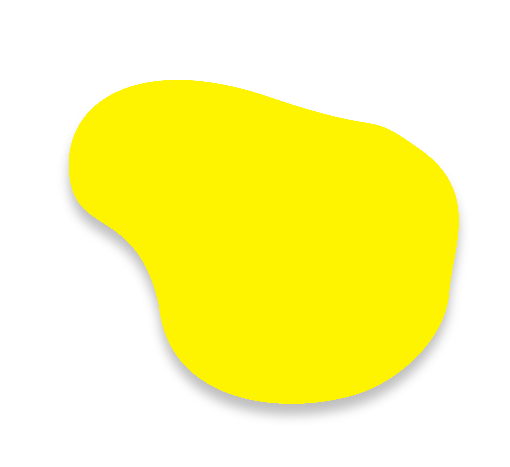
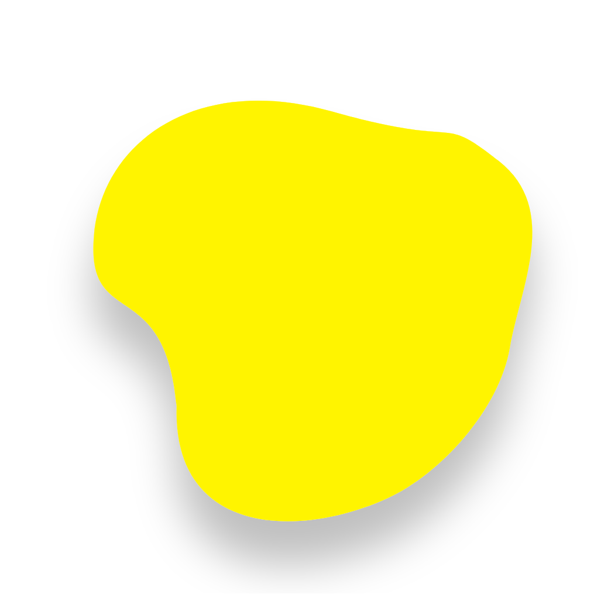
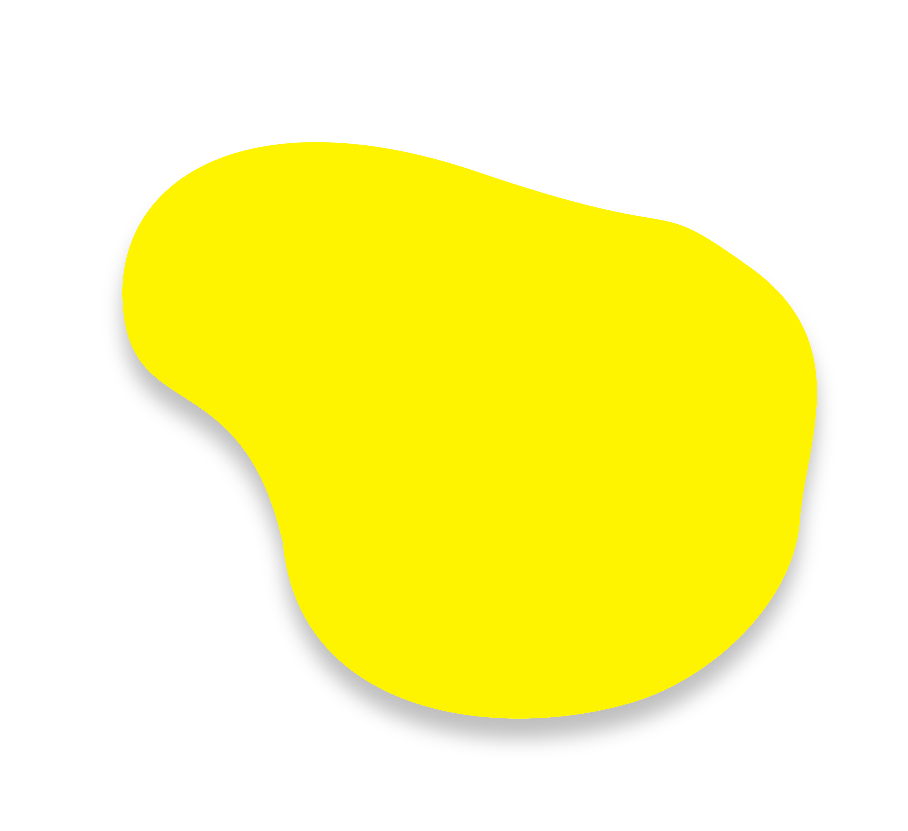
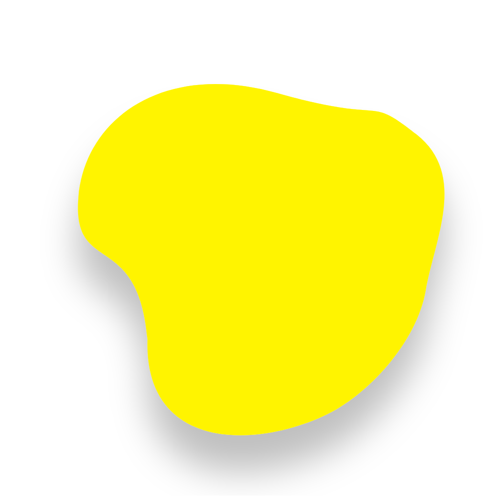

ASMITA ATMARAM MAHAJAN
About

Online Course
Duration: Dec 2023 - Jan 2024
Description: Developed a user-friendly webpage for managing online courses. Integrated Django and Bootstrap CSS for smooth navigation and responsive design. Used Python for backend functionalities and MySQL/SQL for efficient data storage and retrieval.
Technologies Used: Django, HTML, Bootstrap CSS, Python, MySQL/SQL Database
_________________________________________________________________________________________________________________________
Yummy House (Online Food Order)
Duration: Jan 2024 - Feb 2024
Description: Created a seamless online food ordering platform using Django and Bootstrap CSS for intuitive browsing and order placement. Implemented Python for backend operations and MySQL/SQL for secure data management.
Technologies Used: Django, HTML, Bootstrap CSS, Python, MySQL/SQL Database
 


